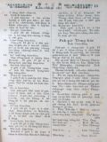
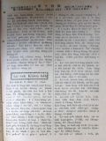
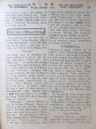
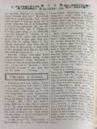

Languages
台文
｜
中文
｜
日本語
｜
English
字體
小
｜
中
｜
大
首頁
/
白話字數位典藏
白話字數位典藏全文檢索
查詢模式
選擇年代
清國時代(1885-1895)
日本時代(1895-1945)
戰後(1945-1969)
1885-1895
1896-1905
1906-1915
1916-1925
1926-1935
1936-1945
1946-1955
1956-1965
1966-1969
1970-1980
1980-1990
1990-2000
2000-2010
2010-
選擇文類
詩
散文
小說
戲劇
傳記
選擇作者
陳清忠
陳清義
編輯部
柯設偕
吳天命
明有德
偕叡廉
周天來
劉華義
王守勇
林茂生
陳添旺
柯維思
王占魁
賴仁聲
陳瓊琚
雪峰逸嵐
吳清鎰
郭水龍
蕭樂善
許水露
葉金木
陳金然
章王由
廖得
鄭連坤
潘道榮
楊士養
梁秀德
劉約翰
周淑慧
高金聲
林燕臣
黃六點
蔡愛義
許有才
主筆
巴克禮
陳鳩水
郭朝成
張基全
陳明清
陳能通
拾穗生
顏振聲
卓恆利
傳道局
胡文池
劉主安
鄭兒玉
張金波
Google Search
Yahoo Search
全部
刊名
標題
標題(教羅)
全文
全文(教羅)
作者
第35頁，共41頁(共813筆資料) 0.60746192932129sec
1
...
33
34
35
36
37
...
41
To Page
GO
文字列表
圖文列表
排序
日期
文類
刊名
作者
影像
[1927-1 芥菜子 文類-散文 作者-雪峰逸嵐/Soat-hong Iat-lâm]
(2)
兩个恭喜 [ Nn̄g ê Kiong-hí ]
兩个恭喜 （風雪拽南） 列位恭喜！大家恭喜恭喜！！欲恭喜啥物？就是恭喜救主降世的大記念日。這真正是真恭喜，毋是一部分的人teh恭喜，是通世界的人攏teh恭喜，就是通世界同心大歡喜的日。按呢來講，就是通世界共同的大節日。這个節日是世界tek--的，其餘的節日是隨國的，隨人--的，kan-ta這个日是世界人類共同--的，這敢毋是著真歡喜，真恭喜？列位兄姊！咱穩當知是啥物因端才有這个節日，就是對上帝的疼不忍世間人沉淪，差聖囝來替人擔罪，才有生出這个日，這敢毋是真大歡喜真大恭喜的事？實在是。真通恭喜，總是毋知親愛的兄姊，有teh想是因為按怎才會連累聖囝來受苦nē？上帝敢真愛伊的神...
[1927-1 芥菜子 文類-散文 作者-陳清忠/Tân Chheng-tiong ]
(2)
死！ [ Sí ! ]
死！ 人應該著死！ 早前出世的人有拄著死的款式，現時teh活的人也著經過彼條死河；後來閣出世的人也是親像為著死來出世一樣。 人生有死，宛然是親像太陽有落山。對東爿上出來的日頭定著一擺著對西爿落--去。人對出世了後，就隨時有死的運命來交纏。人會得通閃避sàn-hiong 的艱苦，lîn-iū 的歹款待；總是袂得通脫離死的手頭。死是人生不能免得，遐確實的事，iáu-kú人無teh想死的事，實在真奇怪。人人宛然 teh想欲活到永遠來經過這世間的款式。若看見序大人的墓，拄著囝兒的大病，朋友葬式的時，彼時就會想出家己的運命；總是若過了就隨時袂記得。 死毋但是佇人生做確實的事實，尚且是最壓制的最有...
[1927-1 芥菜子 文類-散文 作者-陳清忠/Tân Chheng-tiong ]
(2)
信仰的問答--論活基督 [ Sìn-gióng ê Būn-tap--Lūn oa̍h Ki-tok ]
信仰的問答--論活基督 A、先生，你teh 講活基督，彼到底是啥物意思。請指教。 B、活基督就是佇2000年前予人thâi死彼个基督現時猶活，無變換teh活動的意思。 A、基督敢毋是已經予人釘佇十字架死mah，是閣還魂對墓裡出來mah？ B、毋是，毋是按呢，還魂來活的，會閣照舊來死；總是基督是真實死也真實閣活；無變換伊生前的聲音抑是形狀，iáu-kú伊會得自由出入佇關密的門。 A、彼敢毋是基督的陰魂mah？ B、基督的學生起頭嘛是拍算是伊的陰魂，總是基督問in看有啥物通食--無，的時，in予伊一尾魚，伊隨時佇 in 的面前來食；閣再共 in講伊毋是陰魂，陰魂無跤手，伊報in看伊的跤...
[1927-1 芥菜子 文類-散文 作者-明有德/Bêng Iú-tek]
(2)
「羊九十九」的由來 [ “Iûⁿ káu-cha̍p-káu” ê Iû-lâi ]
「羊九十九」的由來 這首是英國蘇格蘭某市的市長Khu-le̍k phêng 的查某囝伊莉莎白作的。伊寫這首，是做基督徒了後無若久。咱若吟這首詩，就知伊有囥滿滿的歡喜佇伊的心內。伊起頭所囥的歡喜佮這款無相同。伊是市長的查某囝，見若伊所愛--的，逐項攏通快快得著；所以伊想平常的人是真下賤，無有親像伊所囥的歡喜。伊拍算伊的快樂無有別項通比。總是到伊捌耶穌了後，這款的快樂予伊袂滿足，知這是外皮暫時的歡喜nā-tiāⁿ毋是真實久長的福氣。所以伊決意愛欲揣出實在久長的快樂。後來果然得著，因為伊讀著約翰第十章所記迷羊的故事，明白伊本身tú-tú是親像迷路的羊，今已經予耶穌揣著；彼時對伊的真心寫出這首詩來...
[1927-1 芥菜子 文類-散文 作者-張金波/Tiuⁿ Kim-pho]
(2)
意料外 [ Ì-liāu-goā ]
意料外 (基隆教會的消息) 世間事濟濟項予人會料得，總是有的予人袂料得。聖冊有記，－吼的獅gâu食人巴比倫王有設獅穴，見若犯罪死刑的人，就hiat落獅穴予獅食，逐个無性命，逐人都料會出。只有但以理獅無kā--伊，對獅的喙脫離；這是人的意料外。 這幾年來基隆，教會的事情有幾若項出佇意料外，排佇下底：－ 1、1923年拄著歹境遇，大家拍算教會負擔傳道的經費袂起；無疑 1924年正月黃瑞擎長老對廈門來遮赴禮拜，紲鼓舞會友著請牧師，果然3月獨立請牧師；遮緊是意料外！ 2、會友請牧師是強tìⁿ，因為無財產，閣人數少。曾清才執事較有氣力，做車長真久，拄著減員，無久紲破病，1925 iân-k...
[1927-2 芥菜子 文類-散文 作者-陳清忠/Tân Chheng-tiong ]
(2)
兩个異端 [ Nn̄g ê ĪN-toan ]
兩个異端 基督教信仰的基礎就是聖經。上帝有顯現伊本身佇聖經內，也宣言永遠的疼佮拯救佇彼中間。論信仰的枝葉kiám-chhái佮時代有變遷，默示論贖罪的大根本，是phoâⁿ過時代有超越變遷，宛然親像高山，雖罔世移人變 iáu-kú無一屑仔的振動。咱的信仰也著親像按呢。 信仰是事實。神學是說明。所以神學有變遷，總是信仰的事實是永袂變。星辰燦爛佇大的空中，雖罔天文學有進步，但是星本身是無變。紅、白的花參插teh開，雖罔植物學的學說有變遷，但是花彼項物雖罔開佇ái-tiân 的樂園，大概無啥物精差。神學 teh變遷，思想teh進步，總是人猶kú是罪人，著欠用救主，若無贖罪的血，chiong-kó...
[1927-2 芥菜子 文類-散文 作者-陳清忠/Tân Chheng-tiong ]
(2)
「Hiat 你的米糧佇水裡」！ [ “Hiat lí ê bí-niû tī chuí-ni̍h”! ]
「Hiat 你的米糧佇水裡」！ 「Hiat你的米糧佇水裡，濟濟日了後你欲閣得著」。這句是希伯來出名的哲學者所講的話。這句的意思，Ná想是ná深，伊的教示是真大。Hiat你的米糧佇水裡！人毋通想報仇，著hiat你的活命的米糧！人kiám-chhái欲講是拍損，你本身kiám-chhái也欲想是無效的所做。總是著毋通惜來hiat 你的米糧佇無人看見池內的水面，按呢就你佇濟濟日了後欲閣揣出！ 愛是啥物？愛是無向望欲對人得著報仇，歡喜來做的親切。世上有濟濟彼款的人將少少予人，就隨時欲要求人的答禮，向望人用加倍還--伊。實在in 的心肝真劣等！ 彼款的人是kan-ta掠對人得著物來做福氣。真...
[1927-2 芥菜子 文類-散文 作者-陳清忠/Tân Chheng-tiong ]
(2)
桌上談 [ Toh-siōng-tâm ]
桌上談 (續接前號)。 (IV) 宗教 有人問講，所有的宗教，佇苦勸人做好彼層事，敢毋是差不多攏相同 mah？」伊應講。「是，總是有大差別。別的宗教教示人講「照恁所會來行好，後來恁就成做好人。」基督教是教示弄人講，「著成做好人，彼時恁就會行好。」心肝的變化是著代先才著。」 學者問講，「論佛陀你想怎樣？」應講，「伊毋是神秘的人，是kan-ta一个道德tek的先生nā-tiāⁿ。因為佇伊的教示的中間，全然無論神的事。這款的人論神的事反轉是傷奇怪。伊所教示--的，就是盤涅抑是絕滅要求的事。總是拯救毋是要求的絕滅，是要求滿足。 治療喙焦得當的方法，毋是予伊死，著予伊lim夠額。」 ...
[1927-2 芥菜子 文類-散文 作者-明有德/Bêng Iú-tek]
(2)
「天堂攏無苦難」的歷史 [ “Thian-tông lóng bô khó͘-lān” ê le̍k-sú ]
「天堂攏無苦難」的歷史 這首詩是楊安得烈作--的，伊佇1807年出世佇蘇格蘭的京城 Ediⁿbvrgh。 伊對大學佮神學校卒業了後，有做中學校的先生 50年久。伊做先生真出名，學生真濟來就問伊。禮拜日伊常常做主日學的主理。 三十一歲的時，佇一暗有去伊的學生的厝，彼个學生的老母ji̍h琴予伊聽。所ji̍h 的真好聽。伊問這个調是啥物調？彼个老母應講是青番仔的調叫做「樂園。」 伊轉去，彼暗就想起彼條的韻遐爾好聽，宛然佇天堂的款，所以才做「天堂攏無苦難」這首詩，和彼个調來做記念。 伊就就將彼條教示伊的學生。有一个牧師聽見伊的學生teh吟就拾彼條掺佇所發行的聖詩的內面。對彼tia̍p了後彼...
[1927-2 芥菜子 文類-散文 作者-陳清忠/Tân Chheng-tiong ]
(2)
一滴一滴的水 [ Chi̍t tih chi̍t tih ê chuí ]
一滴一滴的水 (24) 人一日所suh空氣的份量佮肺的闊。 咱平常teh喘氣，逐擺suh入sûn出空氣的份量，約略是2合。一暝一日肺所喘入歕出空氣的量大概是50石。若將遮个空氣入佇4 斗的酒桶，就會入得百外桶的額。 Suh遮爾濟空氣的肺，伊的面積也是真大。肺是對至細的肺的氣胞集合來成--的，伊的闊若用坪數來比較，差不多是25 坪的闊。 實在無有一項物比人的身軀較奧妙。對按呢通知上帝的智識到佗位！ (25) 長命國佮短命國。 人愛長歲壽，這是人的情。所以若愛長歲壽的人，較好著去長歲壽的國。若是按呢長歲壽的國是佇佗位？若看下面的統計表就會知：－ suī-...
[1927-2 芥菜子 文類-散文 作者-郭水龍/Keh Chuí-lêng]
(2)
北部拜堂建築改築 [ Pak-pō͘ pài-tn̂g Kiàn-tiok kái-tiok ]
北部拜堂建築改築 1926年度建築部有設法墩仔跤拜堂改築，已經好，有開￥ 1000.00左右。南庄移徙，有著內地人寄附 in 的禮拜堂予咱的教會用，也有閣修理￥ 1000.00左右。 頂雙溪有改築真次序。雙連新建築，已經完工，樓跤主日學教室，樓頂拜堂廳，不止好看，開有7000.00箍，總是無起傳道的宿舍。 新店拜堂現時建築中，因為有幾若項的阻礙，許可的 iân-chhiân；也有幾若位教會所寄附猶未交，若好天向望工事會大進行。 利澤簡也有改築，開 ￥ 300.00左右，近日暖暖教會也teh 請愛買一間店做拜堂，in欲負擔一半，總是猶未允准--in。 ...
[1927-2 芥菜子 文類-選擇文類 作者-傳道局/Thoân-tō-kio̍k]
(2)
教會的消息 [ Kàu-hoē ê siau-sit ]
教會的消息。 1、 龍潭教會： 鍾會池執事老爸鍾錦彥佇1月14日有過往。出葬的日真鬧熱，有700外人來會葬。 2、 觀音山教會： 潘清河有娶 Mâ-lú人的姊妹潘氏A-bân，1月17號佇本堂合婚。 3、 月眉教會： 1月30日有設立梁阿亮做長老，也有接納2个大人領洗禮。 4、金包里教會： 有一个會友林爐過往sim chèng會友不止傷心。 5、新莊教會： 11月20號，有去中庄佈道，來聽的人共有26人。 6、 菝仔庄教會： 賴聰和有娶花蓮港教會的長老娘阿新的第二查某囝梁氏A-sīn。佇11月30日有舉行結婚式。 7、 鳳林教會： ...

[1927-2 芥菜子 文類-選擇文類 作者-郭水龍/Keh Chuí-lêng]
(2)
北部中會 [ Pak-pō͘ Tiong-hoē ]
北部中會 郭水龍 北部的中會2月13日下晡 2點鐘有聚集佇艋舺禮拜堂，來赴會宣教師4名牧師9名代議長老17名。 新議長牧師鍾天枝，新記事牧師、葉金木、張金波，掌數郭水龍照舊。 傳道局役員照舊，理事長換Kai Joē-lâm。 1、 佈道進行部照舊，另外派3名做專任佈道的工去逐位佈道。 2、 芥菜子編輯部佮台灣教會報編部合做一个編輯。 3、理事會請派2名佮in議論逐位拜堂欲設幼稚園。 4、 後回的新議案著2禮拜前寄交記事，然後通知議員。 5、派獨立的牧師巡視無獨立的同會。 水返跤同會 張金波 三角湧同會 ...
[1927-3 芥菜子 文類-散文 作者-偕叡廉/Kai Jōe-liâm]
(2)
聖日 [ Sèng-ji̍t ]
聖日 聖日抑是安息日、禮拜日，就是只寶貝的日。怎樣講是指寶貝的日？因為有一項的因端。 1、上帝有講，恁著用安息日，做聖的日永永記得毋通袂記得。伊命令咱佇六日的中間著做工，但是到第七日著歇睏來數念伊。 2、六日拖磨，六日無閒，六日掛慮，身軀厭懶，心神siān，佳哉七日一擺通安歇：身軀得著爽快，心神得著養飼。 3、佇上帝的聖殿相佮聚集禮拜。七日一擺佮四方的兄弟姊妹相見面，相交陪，相佮坐相佮敬畏，呵咾疼痛咱的天爸。 基督教以外無這款的機會。服侍神明的人無親像咱chiâu-ûn通歇睏：in也無同時相佮聚集，攏是單身去敬拜。所以有人捌講，基督教的信者真親切，真和心。這一部分無毋是對佇安息日交...

[1927-3 芥菜子 文類-散文 作者-陳清義/Tân Chheng-gī]
(2)
路得拾麥 [ Lō͘-tek Khioh be̍h ]
路得拾麥 路得記2章17節。 路得佇園裡拾到黃昏的時，後來將所拾的來拍，得著大麥有六斗。佇聖經中所記載的好好查某囡仔，路得一个在內。伊的孝行實在真可取，會堪得做人的模樣，對伊的丈夫過身了後，伊甘願佮伊的 ta-ke

[1927-3 芥菜子 文類-散文 作者-柯設偕/Koa Siat-kai]
(2)
台灣的名稱 [ Tâi-oân ê Bêng-cheng ]
台灣的名稱 咱本島，對古早以來，有濟濟的名稱，就是有真濟款的名。今這tia̍p愛寫遐个名，佮in 的由來，予大家做參考。 「台灣。」 早前，踮佇安平地方的熟番有號in彼地方，叫做「Thaⁿ-ian」，抑是「Thai-ian。」也後來支那人有將彼个名寫漢字，就是譯做現時這2字漢字，號做「台灣。」總是早前是kan-ta 指起安平的地方 nā-tiāⁿ，毋kú後來有將這个名－台灣做全島的名。咱今仔日所講，這个台灣就是對按呢來號的。也現時這个台灣的名是做本島的代表的的名。漢字就是臺灣，國語講，タイワソ英語講TAIWAN，這是咱逐人所知影。 「Takasago」－ 「Ko-sa」現時的...
[1927-3 芥菜子 文類-散文 作者-柯設偕/Koa Siat-kai]
(2)
台灣的生番 [ Tâi-oân ê chhiⁿ-hoan ]
台灣的生番 台灣的生番，毋是tú-tú siāng一款，有幾若款，幾若種族。 今將遮个生番族的名寫佇下底。 1. 泰雅 北部番 2. 賽夏 3. 布農 南部番 4. 鄒 5. 排灣 6. <...
[1927-3 芥菜子 文類-選擇文類 作者-郭水龍/Keh Chuí-lêng]
(2)
訂正 [ Tèng-chèng ]
訂正 前號的 「芥菜子」第 15面「北部中會」記事中第 3 條 「理事會請派2名佮in議論逐位拜堂欲設幼稚園。」愛盲啞照下底 若是有拜堂希望愛設幼稚園-的，請in來佮幼稚園的部會參詳。...
[1927-4 芥菜子 文類-散文 作者-陳清忠/Tân Chheng-tiong ]
(2)
特別的青年 [ Te̍k-pia̍t ē chheng-liân ]
特別的青年 路加2章。41-51節。 讀這10節的聖經，會發見一个特別的青年出來，kiám-chhái有人 teh奇怪講，青年就是青年，thài有一个特別的？實在有。 人出世佇這个世間，若無拄著夭壽，卻逐个會經過一擺偕叡廉的時期，佇彼个時期無攏相同，有的較有智慧，有的較戇，有的較gâu，有的較頇慢，總是遐的較出tioh 的人物，佇青年的時期，有顯出較特別的款，有的特別較gâu講話，有的特別較gâu想，有的特別gâu寫字，有的特別gâu辦事。遮个通講是平常青年的特別，袂得通講是，對古早以來，未捌有的青年，特別今愛求對古早以來，未捌有的青年特別者，有彼个人無？有，彼个是啥物人。耶穌，耶穌怎樣...

[1927-4 芥菜子 文類-散文 作者-雪峰逸嵐/Soat-hong Iat-lâm]
(2)
造化的奧妙 [ Chō-hoà ê Ò-biāu ]
造化的奧妙 北風li-li teh 吹，月光靜靜teh笑的一个暗暝，kia̍h頭看天，眾星點點四圍teh照光明的月顯出愛顧的情滿天清亮來蓋佇烏暗恬靜的世界。共伊想，日月的光星辰的濟，逐个安排佇伊的位，踮佇半空中光線四圍teh射盡in 的義務，行一定的路，顯出無限量的神秘， ná看ná想，ná想ná奧妙。 àⁿ落看地，青翠的花草，茂盛的樹木顯出笑容teh表明in 的滿足，遠遠看山青翠美麗。深深看海，水波漂亮，這幅大宇宙的圖，顯出無限量的神秘，ná看ná想；ná想ná奧妙。 閣看樹木青翠的中間有teh唱歌的鳥，顯明in 的歡喜，相叫跳舞teh快樂，in 的天然美景，閣看媠芳花的中間有真媠的...
第35頁，共41頁(共813筆資料)
1
...
33
34
35
36
37
...
41
To Page
GO
數位典藏國家型科技計劃
拓展台灣數位典藏計畫
版權所有 國立台灣師範大學 台灣文化及語言文學研究所©2008
10610 台北市和平東路一段162號│TEL 02-7734-5516│Fax 02-2358-2461
計劃簡介
典藏特色
執行架構
計畫典藏數位化流程
成員介紹
台灣白話字發展簡介
巴克禮牧師與《台灣教會公報》
廈門話字典-杜嘉德
白話字教學-打馬字
中國南方白話字發展
台灣基督教長老教會簡表
台灣基督教長老教會教會歷史委員會
《北部台灣基督長老教會教會ê歷史》
關於陳清忠
白話字文學：台灣文學的早春